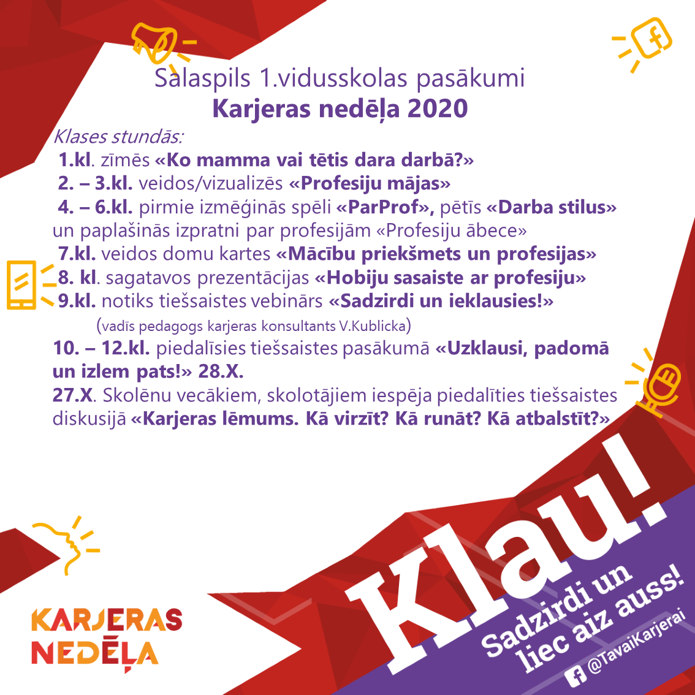

Saturs
7.klašu iesvētības! (17.11)
7.klases skolnieki šajā dienā tika sagatavoti priekš septītās klases ar dažādiem uzdevumiem.
Novembris - Latvijas dzimšanas dienas mēnesis

Izmantoti Darijas Šļapakovas (3.c), Martas Beitānes (2.c) un Letīcijas Antapsones (2.c) darbi (sk. Inta Veinšteina).
Skaistākā dziesma Latvijai 102. dzimšanas dienā
2. un 3. klašu skolēni kopā ar skolotāju Gitu Kalniņu iemācījās un izdziedāja skaistāko latviešu tautasdziesmu
“Bēdu manu, lielu bēdu”.

Latviešu tautasdziesmā ir spēks, dzīvotprieks un laime, kura ir kā vērtība un bagātība mūsu latviešu tautai,
tāpēc, lai tā izskan kā dāvana dzimšanas dienā!

Daudz laimes, Latvija!
Aktīvākie skolēni Latvijai 102. dzimšanas dienā
Katru gadu, tuvojoties valsts svētkiem, 5. - 12. klašu grupās tiek apzināti skolēni, kuri izrāda pašiniciatīvu un pozitīvu attieksmi pret
sabiedrisko darbu ikdienā. Skolotājas Brigitas Mežgales-Turlajas iecere ir kļuvusi par skaistu skolas tradīciju.

Izmantots Jāņa Babra (2.a) darbs (sk. Inta Veinšteina).
Konkurss "Mana kā Valsts prezidenta uzruna Latvijai dzimšanas dienā"
Salaspils 1. vidusskolas skolēni ik gadu aktīvi iesaistās dažādos konkursos.
Izņēmums nav arī prezidenta runas konkurss.
Šogad tajā par tēmu "Ko man nozīmē brīvība un demokrātija?" piedalījās Daniela Vanceviča no 12.b klases un Elizabete Krasnā no 6.d klases.
Priecājamies, ka abas meitenes ir šī konkursa laureātes. 8. novembrī viņām bija fantastiska iespēja apciemot Rīgas pili, piedalīties LTV svinīgā koncerta
filmēšanā un paspiest roku pašam Latvijas prezidentam Egilam Levitam.
Sveicam Danielu un Elizabeti ar lielo uzvaru un viņu skolotājas Dainu Tauriņu un Raminu Skuju!
Svinīgo koncertu par godu Latvijas 102. dzimšanas dienai ar mūsu lielisko meiteņu uzstāšanos varēs noskatīties 18. novembra vakarā LTV1 kanālā.
Domājot par mūsu vērtībam - dabu, vietām un cilvēkiem, katru nedēļu būs iespēja atkārtot un uzzināt
ko jaunu mūsu absolventa Nika Stafecka izveidotajā materiālā. Svinam svētkus!
Noslēgušās starptautiskās komandu matemātikas sacensības (“Baltic Way 2020”)
Latvijās komandā, kā informējām jau iepriekš, bija iekļauts 11.b klases skolnieks Artis Vijups. 10 valstu matemātiķu komandu
konkurencē Latvija ieguva dalītu 4.-5. vietu ar Somiju. Vairāk informācijas VISC mājas lapā.
ŠEIT sacensību rezultāti.
11. novembris - Lāčplēša diena
Aicinām ikvienu savās mājās iedegt svecīti, lai godinātu Latvijas Brīvības cīņās kritušos.
Latvijas prezidenta Egila Levita sveiciens Lāčplēša dienā.
Karjeras nedēļa skolā (26.-30. oktobris)
Artis pārstāvēs Latviju matemātikas olimpiādē "Baltijas ceļš"
17. un 18. oktobrī notika atlase matemātikas komandu olimpiādei "Baltijas ceļš". Tika izveidota Latvijas komanda, kuras sastāvā
ir iekļuvis 11.b klases skolnieks Artis Vijups. Atlases kārtas dalībnieku rezultāti šeit.
Pieejams digitālais ģeogrāfijas atlants pamatskolām, kura aprobācijā piedalās mūsu ģeogrāfijas skolotāja Brigita Mežgale-
Turlaja ar 7.-9.klašu skolēniem. Vairāk
6.c mācību ekskursijā izzina vēsturi (15. oktobris)
6.c klase 14. oktobrī devās mācību ekskursijā uz Rīgu.

Ierodoties VEF Kultūras pilī, mūs sagaidīja muzeja vadītāja Dace un gids Marks. Tā kā nevarēja saprast, kurā brīdī sāks līt, pēc
roku dezinficēšanas devāmies uz VEF bijušās rūpnīcas teritoriju. Pēc gida stāstījuma bērniem bija jāmeklē VEF korpusi,
jānofotografējas pie tiem. Atgriežoties VEF Kultūras pilī, guvām izsmeļošu stāstījumu par pils atjaunošanas darbiem, izmēģinājām
foajē gaismas efektus, uzzinājām, kurā vietā zālē sēž prezidents, kad ierodas uz koncertu pilī. Daudz uzzinājām arī par to, ko
ražoja VEF, kā sūtīja telegrammas, kā zvanīt ar stacionāro telefonu, apskatījām dažādus seno radio veidus, un, protams, redzējām
Latvijā ražoto VEF Minox fotoaparātu. Katram līdzi tika iedots kartona radio modelis, ko mājās var izveidot.
Ekskursijas 2. daļa bija mācību stunda Latvijas Nacionālajā vēstures muzejā par Latvijas t.s. Aizvēstures laiku. Varējām izstaigāt un
aplūkot Akmens, Bronzas un Dzelzs laikmeta ekspozīcijas (vēstures ABC), kā arī veikt uzdevumu, saliekot dažādus priekšmetus
ABC laika joslā.
"Sirsnīgs paldies 6.c klases vecākiem par atbalstu! Ekskursijas laikā bieži dezinficējām rokas un lietojām aizsargmaskas. Bija ļoti
vērtīgi uzzināt gan ko jaunu un interesantu, gan nostiprināt jaunās zināšanas Latvijas vēsturē, gan piedomāt par uzvedības kultūru
muzejā, gan izbaudīt laiku kopā ar klasesbiedriem ārpus skolas," tā aizvadīto dienu rezumē klases audzinātāja Gunta Lagzdiņa.
Skolas runas konkurss 4. - 6. klašu skolēniem (15. oktobris)
9. oktobrī izskanēja 4. – 6. klašu runas konkursa skolas kārta. Šoreiz no izskanējušajiem 25 dzejoļiem neviens pats neatkārtojās,
skolēni arī pastāstīja dažos teikumos par izvēlēto dzejnieku. Populārākie autori pēc jauniešu izvēles ir M.Cielēna, P.Brūveris,
I.Zandere, O.Vācietis, L.Briedis, I.Ziedonis u.c. Vispārsteidzošākais tomēr bija jauno dzejnieku atklājums - skolēni, kuri uzstājās ar
pašu sacerētiem dzejoļiem. Un interesantākais, kā tie tapa, – vērojot mākoņus… Kādā latviešu valodas stundā skolēni vēroja ārā
mākoņus, katrs tajos kaut ko saskatīja un pēc tam radīja dzejoli. Jautājot, vai tas “nāca” grūti jaunajiem dzejniekiem, atbildes bija
visdažādākās. Jācer, ka drīz varēsim lasīt Salaspils 1. vidusskolas dzejas izlasi.
Labākie 4. klašu grupā – Mārtiņš Razgals (1. vieta), Tomass Sperga (2. vieta), Edvarts Slūka (3. vieta).
Labākie 5. klašu grupā – Katrīna Kravčuka (1. vieta), Keita Circāne (2. vieta), Alise Agnese Megne (3. vieta).
Labākie 6. klašu grupā – Ričards Kokins (1. vieta), Grēta Girgensone (2. vieta), Beatrise Masteiko (3. vieta).

Fotogrāfijā labāko izlase…
Sirsnīgu paldies dalībniekiem, viņu vecākiem un latviešu valodas un literatūras skolotājām Martai Spruženiecei, Janai Bisterei,
Raminai Skujai un Jolantai Strautiņai saka direktores vietniece Ineta Nekraša.
2.e klase atsaucas zoozīļuka aicinājumam (12. oktobris)
2.e klase atsaucās Rīgas Zooloģiskā dārza aicinājumam lasīt ozolzīles, jo tās lieliski noderēs zoodārza iemītniekiem.

"Mēs esam sportiņā" stafešu skrējiens (10. oktobris)
10. oktobrī, Salaspils pusmaratona "Noķer vēju" ietvaros notika aizkavējies Olimpiskās dienas 2020 "Mēs esam sportiņā" stafešu
skrējiens 4 x 5 km, kurā piedalījās divas Salaspils 1. vidusskolas komandas. 10. klašu komandu pārstāvēja E.Petrovska, A.Cunska,
T.Kramarovs (10.a) un O.Deņisenoks (10.b), apvienotajā 11. un 12. klašu komandā startēja A.Stroža, K.Brunovska (11.b)
un T.Dejus (12.b), kurš veica 2 x 5 km!.

"Paldies jauniešiem par startu un viņu vecākiem par atbalstu!" saka sporta skolotāja Valda Kublicka.
Labo darbu nedēļa 2020 (8. oktobris)
Labdarības organizācija Palīdzēsim.lv jau divpadsmito gadu organizē akciju “Labo darbu nedēļa”, kad pastiprināta uzmanība tiek
pievērsta palīdzībai, kuras sniegšanai nav nepieciešams liels finansiālais ieguldījums.
Arī Salaspils 1.vidusskolas 5.e klases skolēni kopā ar saviem vecākiem piedalās šajā akcijā otro gadu, bet audzinātājai Dacei
Kontrimienei šis ir jau piektais gads, kad oktobra pirmajās nedēļās tiek domāts par dāvaniņām Salaspils vientuļajiem cilvēkiem.
Pateicoties Salaspils sociālā dienesta darbiniekiem, sarūpētās dāvanas nonāk pie adresātiem.
Darot kopā, var izdarīt vairāk labu darbu!
Jau otro gadu pēc kārtas (5. oktobris)
mums ir EKO skolas zaļais karogs.

Paldies koordinatorei skolotājai Annai Romanovai un viņas aktīvajiem skolēniem!